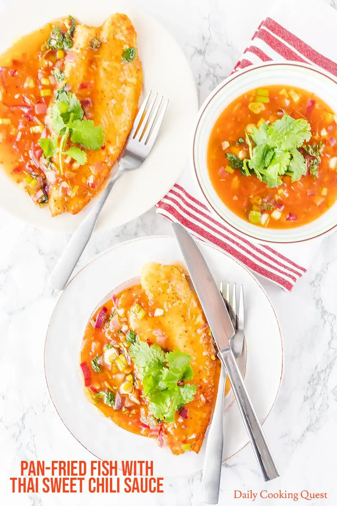

Snapper with Sweet-Chili Sauce
- Total time30 mins
- Serves4
- Ingredients17
- Steps4

Ingredients
For the Sauce
- 1 serrano chile, chopped
- 2 cloves garlic, minced
- Kosher Salt
- 2 teaspoons sugar
- 2 tablespoons fish sauce
- 1 tablespoon rice vinegar
- 3 tablespoons olive oil
- Green onions, chopped
- ¼ cup cilantro, or less if needed
- 1 lime cut in half
For the Fish
- ¼ cup unsalted peanuts
- 2 teaspoons salt
- 2 tablespoons chili flakes
- 4 tablespoons cilantro
- 1 tablespoon fish sauce
- 2 eggs
- 4 snapper filets (skinless)
Directions
- Make the chili sauce: In a medium bowl, grind together chopped serrano, garlic, salt, sugar. Add the fish sauce, rice vinegar, olive oil, green onions, cilantro, and lime juice. Taste to see if seasoning is the way you want it, and let sit while you finish the rest of the dish
- Make the fish: In a bowl, smash peanuts, salt, chili flakes, cilantro into a crumbly substance (don't smash the peanut mixture into powder!). In a separate bowl, beat the two eggs and the tablespoon of fish sauce.
- Lay each filet (only on 1 side) in the egg mix, and then lay the side with the egg wash in the peanut mixture and press down. Make sure the whole side is covered in peanuts.
- Heat a pan over medium-high and drizzle with olive oil. Place each filet on the pan (peanut side first) and sear on both sides, 2-3 minutes each side. Take the pan off heat and place filets on a plate. Drizzle chili sauce on top of each filet. Serve.